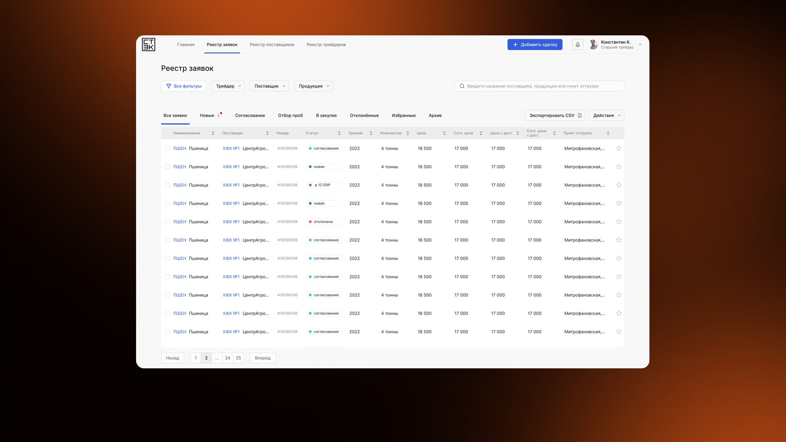
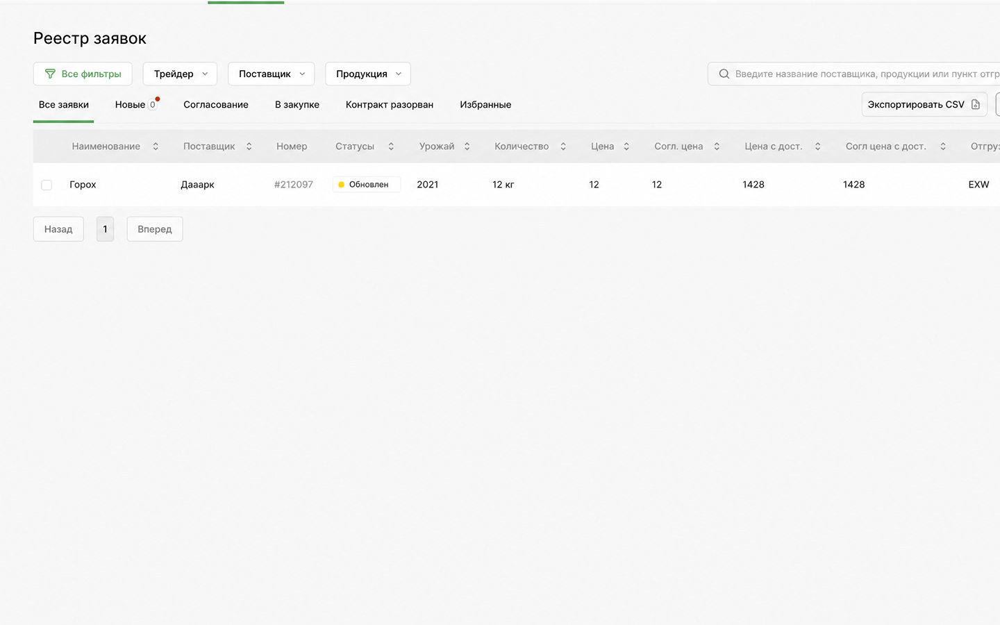
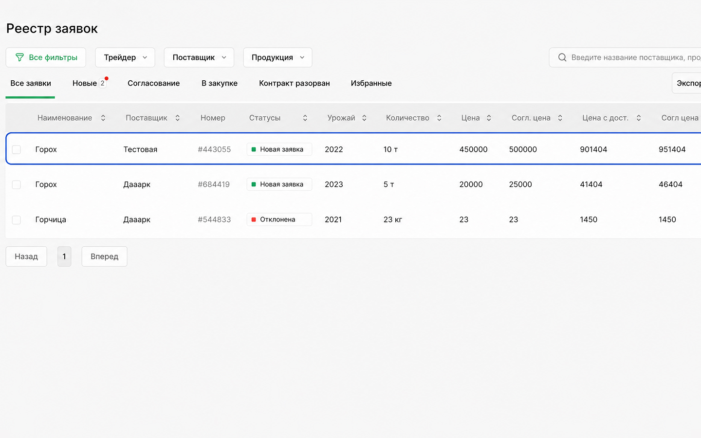
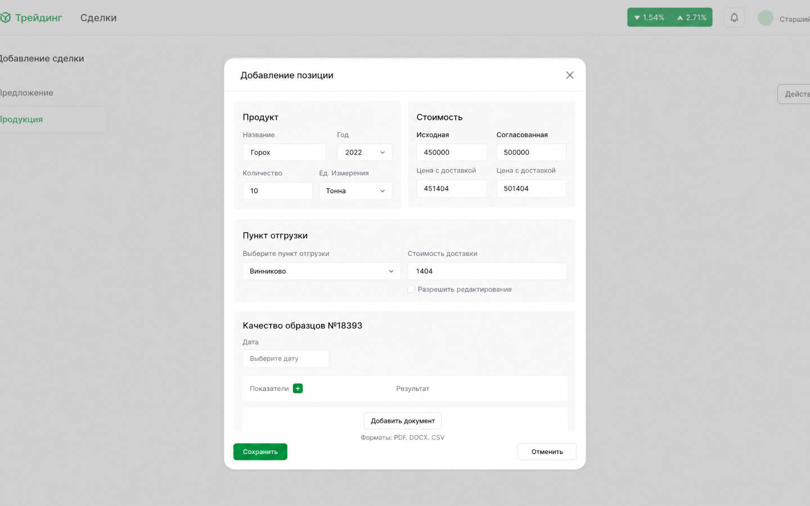
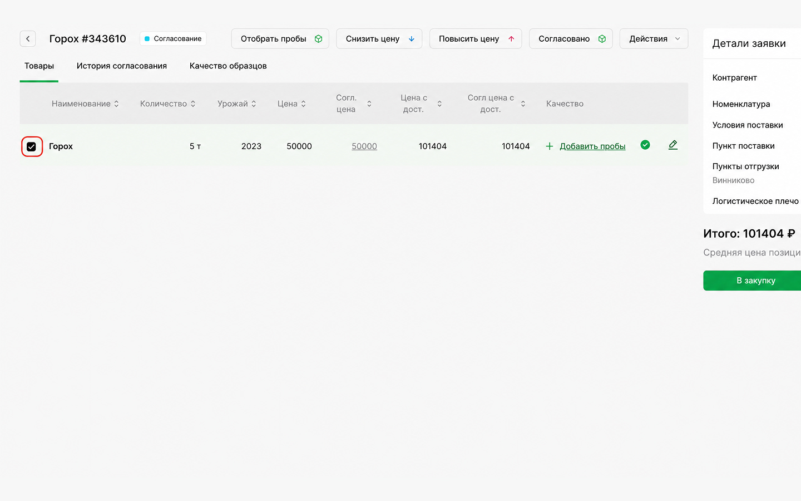
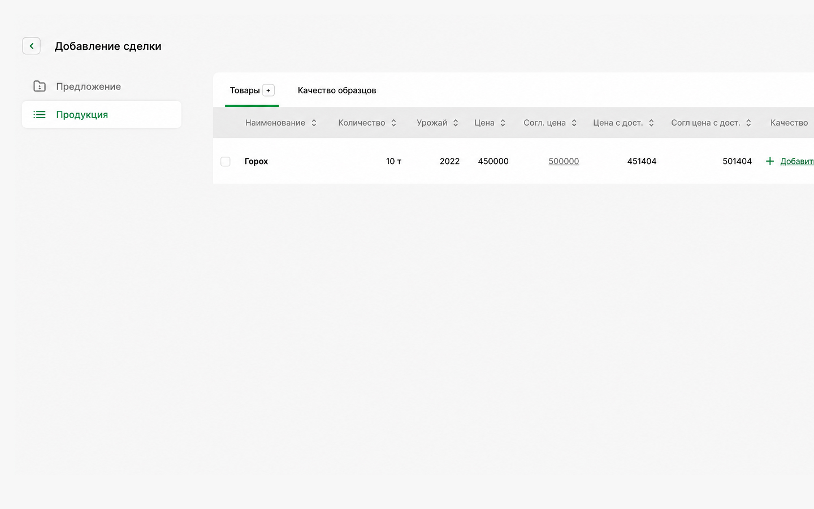

Вернуться к продуктам
Реестр отечественного ПО, запись № 18066 от 20.06.2023
ПО для автоматизации сделок по покупке и продаже продукции
Вся сделка в одном паспорте
СтэкРус — российская система для управления сделками по покупке и продаже продукции. Цена, согласования, доставка и документы живут в одном паспорте сделки — и в любой момент видно, на каком шаге заявка и чьего решения она ждёт.
Ключевые возможности системы
От заявки сотрудника до передачи договора в учётную систему — в одном окне, с понятным статусом на каждом шаге.

Личный кабинет сотрудника
Начните с заявки
Сотрудник создаёт заявку на договор, заполняет паспорт сделки и отслеживает решение руководителя в своём кабинете. Нужные списки доступны с фильтрами и поиском.

Заявки на договоры
Все сделки и статусы видны сразу
Каждая заявка движется по единой статусной модели. В реестре видно, на каком шаге сделка и чьего действия она ждёт — от новой заявки до заключения договора.

Паспорт сделки
Вся информация в одной карточке
Собирайте всё о сделке в одной карточке: контрагент, номенклатура, условия поставки, пункты отгрузки и приёма, количество, срок поставки, стоимость лота и доставки. К паспорту прикрепляются документы по сделке, детализация по номенклатуре и ход согласования.

Оценка стоимости
Согласование цены
Отправляйте заявку руководителю направления и получайте решение статусом: снизить цену, поднять цену, отбор или заключить договор. Сотрудник меняет цену строго в том направлении, которое указал руководитель, — разночтений не остаётся.

Личный кабинет руководителя
Решение на своём этапе
Руководитель направления просматривает заявку и паспорт контрагента, затем принимает решение о цене, отборе или заключении договора. Сотрудник видит результат в статусе заявки.

Хранилище сделок и справочники
Данные без повторного ввода
Справочники, паспорта контрагентов и сведения о сделках работают в одном контуре. После решения о заключении договора система передаёт согласованный паспорт сделки в 1С:ERP и показывает результат передачи в статусе заявки.
Детали, которые важны в работе
СтэкРус собирает не только согласование, но и данные, необходимые для решения о сделке и её исполнения.
Логистическое плечо
Укажите пункты отгрузки и доставки из справочника или точками на карте, количество и вид транспорта. Система покажет длину плеча, тариф и стоимость и сама передаст результат в паспорт сделки.
Качество и отбор проб
Фиксируйте схемы отбора образцов, историю отбора проб и показатели качества прямо в паспорте сделки. Решение о договоре принимается с результатами по образцам перед глазами.
Паспорт контрагента
Открывайте паспорт контрагента из сделки и смотрите его заключённые договоры и другие сделки с ним. Нового контрагента сотрудник добавляет заявкой из своего кабинета.
Интеграция с 1С:ERP
Передавайте согласованный паспорт сделки в 1С:ERP без повторного ввода. Справочники и паспорта контрагентов синхронизируются между системами, а результат передачи виден в статусе заявки: «Передано в 1С:ERP» или «Ошибка».
От заявки до договора
Каждая заявка на договор движется по единой статусной модели, поэтому в любой момент видно, на каком она шаге и чьего действия ждёт.
- 01
Новая заявка
Сотрудник создаёт паспорт сделки, заполняет его и отправляет — заявка получает статус «Новая».
- 02
Решение руководителя
Руководитель направления просматривает сделку и паспорт контрагента и отправляет решение: снизить или поднять цену, перейти к отбору, заключить договор.
- 03
Корректировка
Сотрудник корректирует цену по указанию руководителя и отправляет заявку повторно либо закрывает её статусом «Сделка не состоялась».
- 04
Передача в 1С:ERP
После решения «Заключить договор» система передаёт паспорт сделки в 1С:ERP и фиксирует результат.
Что говорят заказчики
«Раньше цену согласовывали в переписке, и к концу недели никто не помнил, на чём остановились. Теперь по каждой заявке виден статус и всё, что по ней решили».
«Стоимость доставки считаю прямо в карточке сделки: выбрала точки на карте — получила длину плеча, тариф и сумму. Не нужно отдельно запрашивать расчёт по каждому лоту».
«Согласованная сделка уходит в 1С:ERP сама. Повторный ввод исчез, а вместе с ним и расхождения между отделом закупок и учётом».
Согласуйте первую сделку вместе с нами
На демонстрации пройдём весь путь: заведём заявку, согласуем цену, рассчитаем доставку и передадим паспорт сделки в 1С:ERP. Вы увидите, как система ложится на ваш процесс.
Записаться на демонстрациюСтоимость под ваш процесс
Цена зависит от числа пользователей, набора справочников и объёма интеграции с 1С:ERP. Назовите эти три параметра — подготовим расчёт и состав работ.
Получить расчёт
Документы и полезные материалы
Комплект документации: описание функциональных характеристик, описание процессов жизненного цикла, техническое задание, руководство администратора, руководство администратора БД, руководство оператора.
Запросить документы Лицензионное соглашение — по запросу
Часто задаваемые вопросы
Собрали то, что чаще всего спрашивают на первых встречах. Если нужного ответа нет — напишите, ответим предметно.
Входит ли СтэкРус в реестр отечественного ПО?
Да. Реестровая запись № 18066 от 20.06.2023, классы ПО 09.09 и 09.12. Продукт можно закупать организациям с требованием использовать отечественное программное обеспечение.
Какие задачи решает система?
Хранит информацию о заключении сделок по покупке и продаже продукции, ведёт паспорта сделок и контрагентов, автоматически оценивает стоимость логистического плеча и обменивается данными с 1С:ERP. Сотрудник и руководитель направления работают в отдельных личных кабинетах.
Кто работает в системе?
Сотрудник создаёт заявку на договор и вносит изменения цены. Руководитель направления принимает решение о заключении договора или определяет, в какую сторону менять цену. Суперпользователь совмещает обе роли. Администратор настраивает систему и назначает роли учётным записям.
Как устроено согласование сделки?
Заявка проходит по статусной модели: «Новая», «Снизить цену», «Поднять цену», «Отбор», «Заключить договор», «Сделка не состоялась», «Передано в 1С:ERP», «Ошибка». Статусы цены, отбора и заключения договора устанавливает руководитель направления, статусы передачи в 1С:ERP — система автоматически.
Что входит в паспорт сделки?
Номер и дата создания, контрагент, условия поставки, номенклатура, пункты отгрузки и приёма, срок поставки, количество и единица измерения, стоимость лота и стоимость доставки, решение и его дата, комментарий. К ним добавляются детализация по номенклатуре, согласование, история отбора проб, схемы отбора образцов, качество образцов и документы по сделке.
Как рассчитывается стоимость логистического плеча?
В отдельном окне задаются пункт отгрузки, пункт доставки, количество, вид транспорта и характеристики перевозимой единицы. Пункты выбираются из справочника или указываются на карте. Расчёт выполняется по методике заказчика; на выходе — длина плеча, тариф и стоимость, которые автоматически попадают в паспорт сделки.
Что передаётся в 1С:ERP?
Паспорт сделки после решения о заключении договора. Кроме того, сервис интеграции синхронизирует справочники и паспорта контрагентов. Если передача не прошла, заявка получает статус «Ошибка» и не теряется.
Какие справочники есть в системе?
Контрагенты, места приёма и отгрузки, условия поставки, номенклатура, единицы измерения, показатели качества образцов, схемы отбора проб, заключённые договоры.
Как система защищает от ошибок ввода?
Поля форм проверяются перед отправкой по настройкам конфигуратора — невалидная форма не уйдёт. Необратимые действия пользователь подтверждает отдельно. Повторно отправить форму без изменений нельзя.
Как устроена техническая поддержка?
Обращения принимаются по электронной почте и в специализированных чатах, каждое регистрируется, о результате сообщаем по почте. В рамках поддержки — помощь в поиске и устранении проблем, консультации по работе, предоставление документации, доработка под требования заказчика и модернизация.
Обсудим
ваш проект
Оставьте заявку — мы свяжемся с вами и предложим решение.